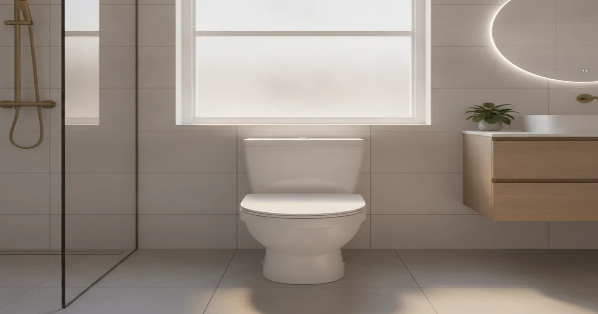
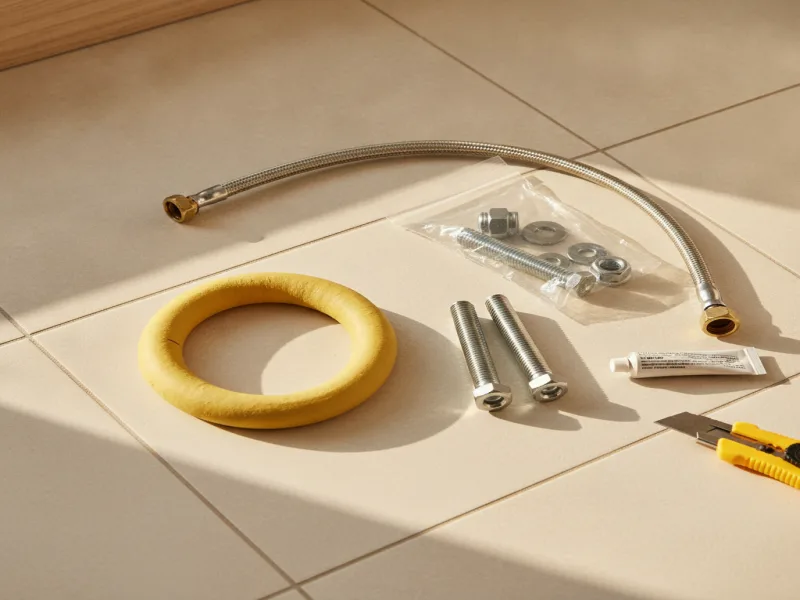

Toilet Installation in Armonk, NY
Upgrading to a new toilet doesn't have to mean a full bathroom remodel. We install it cleanly, seal it correctly, and make sure it works right from the first flush.
- Licensed & Insured
- Upfront Pricing
- Same-Day Service Available
- Clean, Respectful Technicians

Our toilet installation process
Most toilet installations are a standalone project, not part of a bigger renovation, and we treat them that way — quick, clean, and with minimal disruption to your bathroom. We start by removing the old toilet and inspecting the flange and floor underneath for any damage that needs addressing before the new unit goes in.
From there we set a new wax ring or gasket seal, mount the new toilet, connect the water supply line, and check for a solid, wobble-free seat. Before we consider the job done, we run it through several flush cycles and check around the base for any sign of a leak.

If your toilet needs more than a straightforward swap, we'll tell you before we start. In some cases repairing rather than replacing a toilet is the more sensible option, and we'd rather steer you toward the cheaper fix if that's genuinely the better call.
What affects the cost
The toilet itself is only part of the cost. What usually moves the price is the condition of the flange and shutoff valve underneath the old unit, whether the new toilet's rough-in measurement matches your existing plumbing, and whether you're choosing a standard two-piece toilet or a one-piece, comfort-height, or specialty model.
If the flange is cracked, corroded, or sitting at the wrong height, that needs to be corrected first so the new toilet seals properly. We'll always show you what we find before including it in your price.
Local factors for Armonk homes
A common project we see is a homeowner upgrading a single toilet to a more water-efficient model, without touching anything else in the bathroom. It's a small, self-contained project that still makes a real difference on your water bill, especially if the toilet it's replacing is an older, higher-flow model.
Fixture standards and code requirements for toilet installation are covered under the plumbing codes used across New York, and the Uniform Plumbing Code maintained by IAPMO is a useful reference if you want to understand the standards behind a correct installation.
Keeping your new toilet working well
Once your new toilet is in, there's not much upkeep required. Avoid flushing anything other than toilet paper, and check periodically that the tank isn't running — a quick fix now is always easier than letting a small leak run for months.
It's also worth having the wax ring seal checked if the toilet is ever removed for flooring work or a remodel, since reusing an old seal after moving the unit is a common cause of leaks down the road.
When to call a professional
Call us if you notice rocking, a leak at the base, or a rough-in measurement that doesn't seem to match the toilet you've picked out. Getting the flange height and seal right the first time is what actually prevents leaks down the line, and it's easy to get wrong without the right tools and experience.
If your toilet upgrade is part of a larger project, a full bathroom remodel plumbing project may be worth discussing instead of a standalone install. Otherwise, check out everything else we handle for Armonk plumbing for the rest of what we do.
Frequently asked questions
How long does toilet installation take?
Most standard installations take one to two hours, assuming the flange and shutoff valve underneath are in good condition.
Do I need to buy the toilet myself, or can you supply one?
Either works. We're happy to install a toilet you've already picked out, or recommend a model that fits your bathroom and budget.
Will a new toilet fit my existing plumbing?
In most cases, yes, as long as the rough-in measurement matches. We check this before installation so there are no surprises.
Is it worth upgrading to a water-efficient toilet?
If your current toilet is an older, higher-flow model, switching to a modern efficient toilet can noticeably reduce water use without any real difference in performance.
Can you install a toilet without a full bathroom remodel?
Yes. Most of our toilet installations are standalone projects, not part of a bigger renovation.
What if the flange under my old toilet is damaged?
We'll repair or replace it before setting the new toilet, since installing on top of a damaged flange is one of the most common causes of leaks later on.